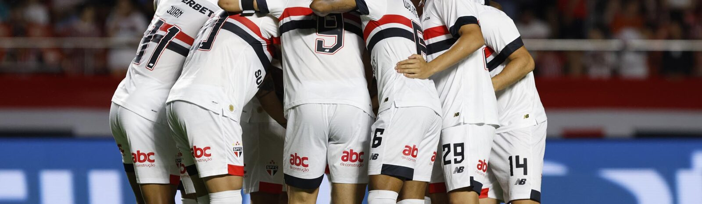
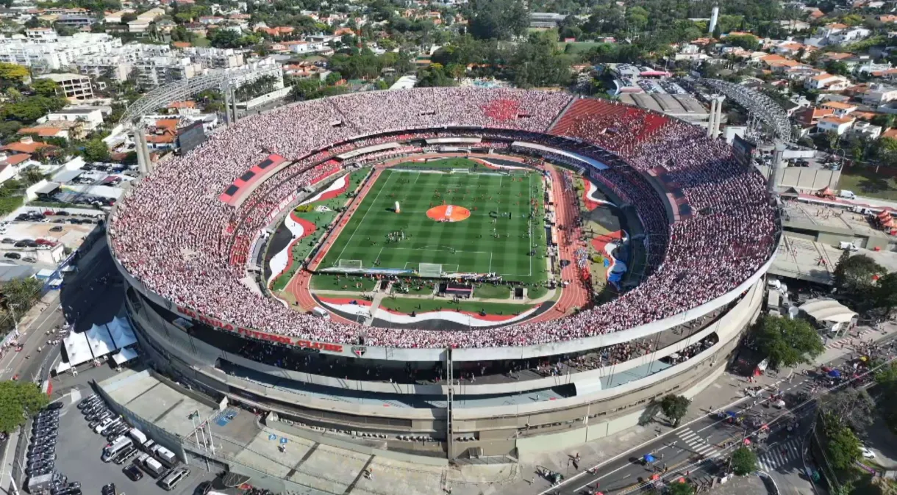

Tricolor Paulista
Tricolor Paulista

A HITÓRIA
São Paulo Futebol Clube. O tricolor paulista surgiu através da fusão de dois antigos clubes: o Paulistano, grande campeão no início do século XX e a Associação Atlética das Palmeiras, que se uniram em 1930 dando origem ao Clube Athlético São Paulo ou São Paulo da Floresta, como muitos o chamavam. No seu segundo ano de existência, o clube se consagrou campeão paulista. O São Paulo já era um gigante do futebol local, só que nem mesmo o clube imaginava onde iria chegar. Em 1935, o clube teve uma nova refundação. Isso ocorreu devido a uma crise política dentro da instituição. Alguns dirigentes não estavam contentes com a situação do futebol no país, tomando a atitude de sair do futebol e se unir com o Clube Regatas Tietê. Só que o futebol no tricolor resistiu, e em 4 de junho de 1935 alguns sócios refundaram o que foi chamado de Clube Atlético São Paulo, tornando-se posteriormente o grande São Paulo Futebol Clube.
A GLORIA NA DECADA DE 40, "O ROLLO COMPRESSOR"
A década de 40 foi uma das melhores décadas para a torcida são-paulina. O time tricolor venceu cinco estaduais (1943, 1945, 1946, 1948 e 1949), título mais importante da época. A torcida ia aos jogos para saber de quanto o São Paulo venceria e não "se venceria". Um verdadeiro rolo compressor, apelido que se deu pelas grandes goleadas nos jogos. Em 1944, o Tricolor Paulista goleou o Santos por 9 x 1, até hoje a maior goleada no clássico. Em 1946, o São Paulo ganhou o Paulista de forma invicta. Em 1949, o São Paulo fez uma marca histórica: foi campeão com 70 gols marcados e 23 sofridos, em 22 partidas disputadas. Além disso, o Tricolor teve o artilheiro do campeonato: Friaça, com 24 gols. Os grandes ídolos daquela geração eram Leônidas da Silva e Teixerinha. Leônidas ficou conhecido por inventar o gol de bicicleta. No entanto, existem relatos que o gol já tinha sido feito pelo chileno Ramón Unzaga. Nesta década foram criados o hino do time que, apesar de ter sido composto em 1935, ganhou a versão atual apenas em 1942.
TABELA DE TITULOS CONQUISTADOS
| CAMPEANATO | ANO |
|---|---|
| Copa do Mundo de Clubes da FIFA | 2005 |
| Copa Intercontinental | 1992 e 1993 |
| Copa Libertadores da América | 1992, 1992 e 2005 |
| Copa Sul-Americana | 2012 | Recopa Sul-Americana | 1993 e 1994 |
| Supercopa Libertadores | 1993 |
| Copa CONMEBOL | 1994 |
| Copa Master da CONMEBOL | 1996 |
| Campeonato Brasileiro | 1977, 1986, 1991, 2006, 2007 e 2008 |
| Copa do Brasil | 2023 |
| Supercopa Rei | 2024 |
| Torneio Rio–São Paulo | 2001 |
| Torneio Rio–São Paulo | 1931, 1943, 1945, 1946, 1948, 1949, 1953, 1957, 1970, 1971, 1975, 1980, 1981, 1985, 1987, 1989, 1991, 1992, 1998, 2000, 2005 e 2021 |
| Supercampeonato Paulista | 2002 |